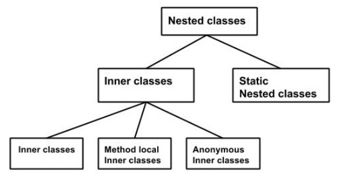

Inner Classes In Java
Nested Classes
In Java, just like methods, variables of a class too can have another class as its member. Writing a class within another is allowed in Java. The class written within is called the nested class, and the class that holds the inner class is called the outer class.Syntax
Following is the syntax to write a nested class. Here, the class Outer_Demo is the outer class and the class Inner_Demo is the nested class.
class Outer_Demo {
class Inner_Demo {
}
}
|
Nested classes are divided into two types −
- Non-static nested classes − These are the non-static members of a class.
- Static nested classes − These are the static members of a class.

Inner Classes (Non-static Nested Classes)
Inner classes are a security mechanism in Java. We know a class cannot be associated with the access modifier private, but if we have the class as a member of other class, then the inner class can be made private. And this is also used to access the private members of a class.
Inner classes are of three types depending on how and where you define them. They are −
- Inner Class
- Method-local Inner Class
- Anonymous Inner Class
Inner Class
Creating an inner class is quite simple. You just need to write a class within a class. Unlike a class, an inner class can be private and once you declare an inner class private, it cannot be accessed from an object outside the class.Following is the program to create an inner class and access it. In the given example, we make the inner class private and access the class through a method.
Example
class Outer_Demo {
int num;
// inner class
private class Inner_Demo {
public void print() {
System.out.println("This is an inner class");
}
}
// Accessing he inner class from the method within
void display_Inner() {
Inner_Demo inner = new Inner_Demo();
inner.print();
}
}
public class My_class {
public static void main(String args[]) {
// Instantiating the outer class
Outer_Demo outer = new Outer_Demo();
// Accessing the display_Inner() method.
outer.display_Inner();
}
}
|
Here you can observe that Outer_Demo is the outer class, Inner_Demo is the inner class, display_Inner() is the method inside which we are instantiating the inner class, and this method is invoked from the main method.
If you compile and execute the above program, you will get the following result −Output
This is an inner class. |
Accessing the Private Members
As mentioned earlier, inner classes are also used to access the private members of a class. Suppose, a class is having private members to access them. Write an inner class in it, return the private members from a method within the inner class, say, getValue(), and finally from another class (from which you want to access the private members) call the getValue() method of the inner class.
To instantiate the inner class, initially you have to instantiate the outer class. Thereafter, using the object of the outer class, following is the way in which you can instantiate the inner class.Outer_Demo outer = new Outer_Demo(); Outer_Demo.Inner_Demo inner = outer.new Inner_Demo(); |
The following program shows how to access the private members of a class using inner class.
Example
class Outer_Demo {
// private variable of the outer class
private int num = 175;
// inner class
public class Inner_Demo {
public int getNum() {
System.out.println("This is the getnum method of the inner class");
return num;
}
}
}
public class My_class2 {
public static void main(String args[]) {
// Instantiating the outer class
Outer_Demo outer = new Outer_Demo();
// Instantiating the inner class
Outer_Demo.Inner_Demo inner = outer.new Inner_Demo();
System.out.println(inner.getNum());
}
}
|
If you compile and execute the above program, you will get the following result −
Output
This is the getnum method of the inner class: 175 |
Method-local Inner Class
In Java, we can write a class within a method and this will be a local type. Like local variables, the scope of the inner class is restricted within the method.
A method-local inner class can be instantiated only within the method where the inner class is defined. The following program shows how to use a method-local inner class.
Example
public class Outerclass {
// instance method of the outer class
void my_Method() {
int num = 23;
// method-local inner class
class MethodInner_Demo {
public void print() {
System.out.println("This is method inner class "+num);
}
} // end of inner class
// Accessing the inner class
MethodInner_Demo inner = new MethodInner_Demo();
inner.print();
}
public static void main(String args[]) {
Outerclass outer = new Outerclass();
outer.my_Method();
}
}
|
If you compile and execute the above program, you will get the following result −
Output
This is method inner class 23 |
Anonymous Inner Class
An inner class declared without a class name is known as an anonymous inner class. In case of anonymous inner classes, we declare and instantiate them at the same time. Generally, they are used whenever you need to override the method of a class or an interface. The syntax of an anonymous inner class is as follows −
Syntax
AnonymousInner an_inner = new AnonymousInner() {
public void my_method() {
........
........
}
};
|
The following program shows how to override the method of a class using anonymous inner class.
Example
abstract class AnonymousInner {
public abstract void mymethod();
}
public class Outer_class {
public static void main(String args[]) {
AnonymousInner inner = new AnonymousInner() {
public void mymethod() {
System.out.println("This is an example of anonymous inner class");
}
};
inner.mymethod();
}
}
|
If you compile and execute the above program, you will get the following result −
Output
This is an example of anonymous inner class |
In the same way, you can override the methods of the concrete class as well as the interface using an anonymous inner class.
Anonymous Inner Class as Argument
Generally, if a method accepts an object of an interface, an abstract class, or a concrete class, then we can implement the interface, extend the abstract class, and pass the object to the method. If it is a class, then we can directly pass it to the method.
But in all the three cases, you can pass an anonymous inner class to the method. Here is the syntax of passing an anonymous inner class as a method argument −
obj.my_Method(new My_Class() {
public void Do() {
.....
.....
}
}); |
The following program shows how to pass an anonymous inner class as a method argument.
Example
// interface
interface Message {
String greet();
}
public class My_class {
// method which accepts the object of interface Message
public void displayMessage(Message m) {
System.out.println(m.greet() +
", This is an example of anonymous inner class as an argument");
}
public static void main(String args[]) {
// Instantiating the class
My_class obj = new My_class();
// Passing an anonymous inner class as an argument
obj.displayMessage(new Message() {
public String greet() {
return "Hello";
}
});
}
}
|
If you compile and execute the above program, it gives you the following result −
Output
Hello, This is an example of anonymous inner class as an argument |
Static Nested Class
A static inner class is a nested class which is a static member of the outer class. It can be accessed without instantiating the outer class, using other static members. Just like static members, a static nested class does not have access to the instance variables and methods of the outer class. The syntax of static nested class is as follows −Syntax
class MyOuter {
static class Nested_Demo {
}
}
|
Instantiating a static nested class is a bit different from instantiating an inner class. The following program shows how to use a static nested class.
Example
public class Outer {
static class Nested_Demo {
public void my_method() {
System.out.println("This is my nested class");
}
}
public static void main(String args[]) {
Outer.Nested_Demo nested = new Outer.Nested_Demo();
nested.my_method();
}
}
|
If you compile and execute the above program, you will get the following result −
Output
This is my nested class |
« Previous Next »